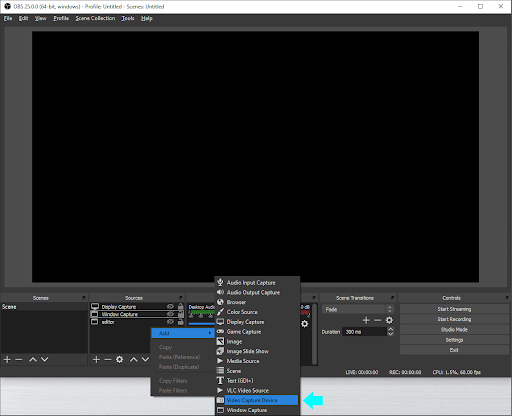
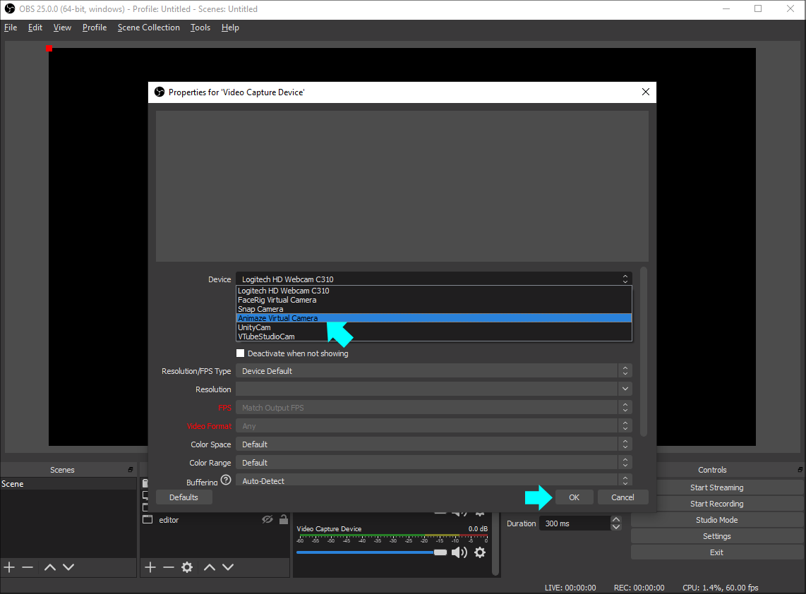
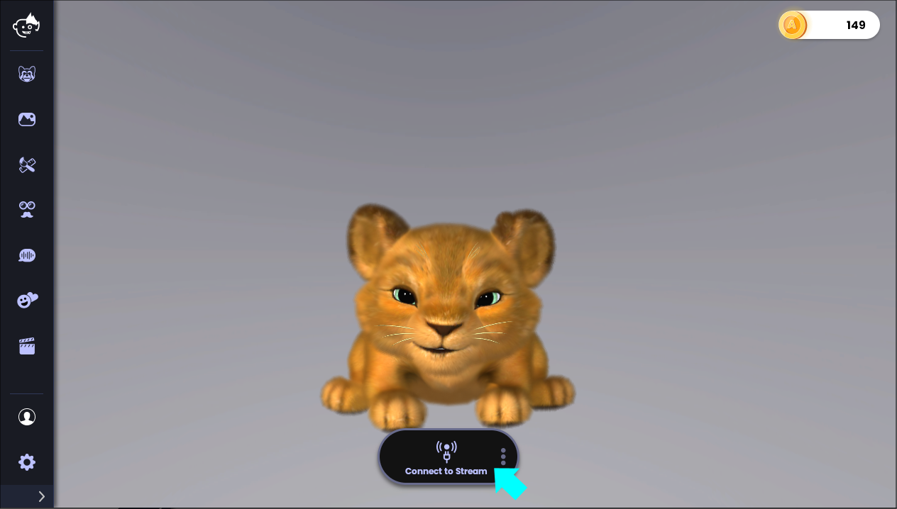

Animazeと他のソフトウェアを使用して配信するにはどうすればよいですか?
Animazeは主要な配信用ソフトウェアとの互換性があります。ここではOBSを例に手順を説明します。
1.OBSを開き、新しいシーンを作成します

2.ソースで「映像キャプチャデバイス」を選択します
3.デバイスのドロップダウンメニューから「Animazeバーチャルカメラ」を選択し「OK」をクリックします

4.Animazeで「放送」オプションがオンになっていることを確認してください
